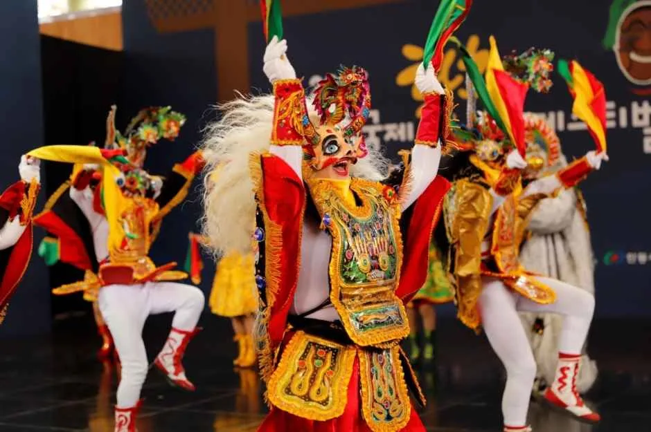
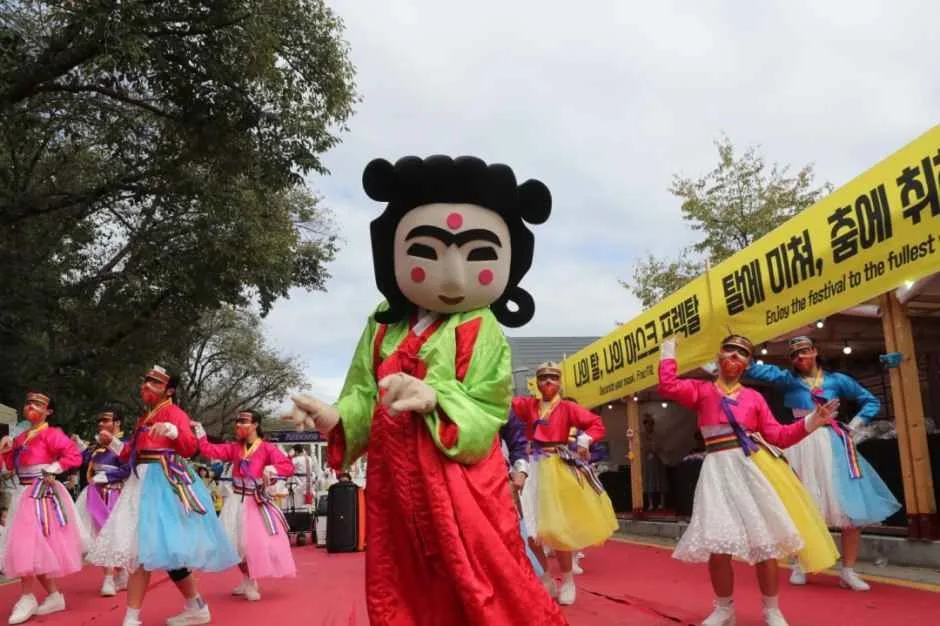
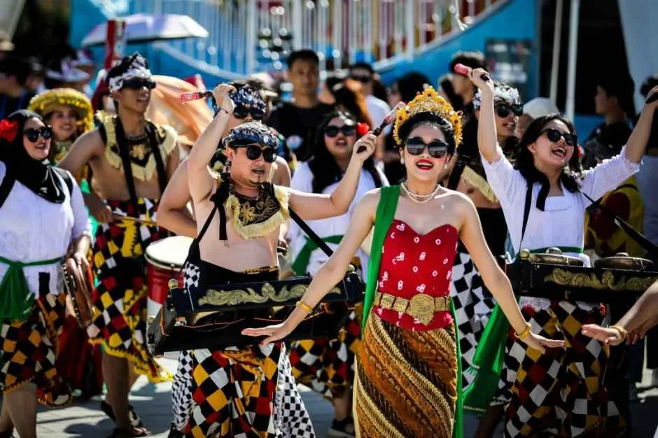
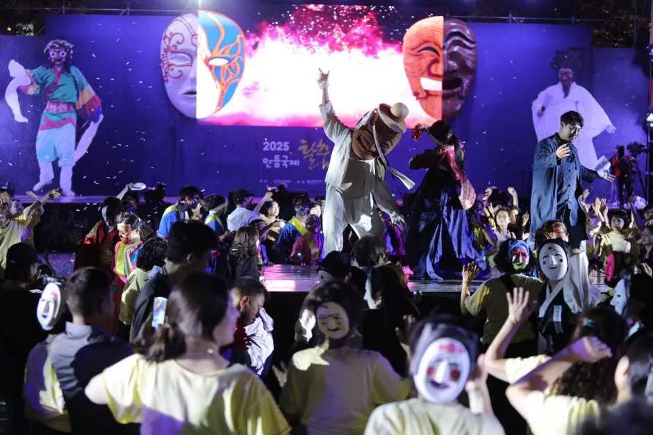
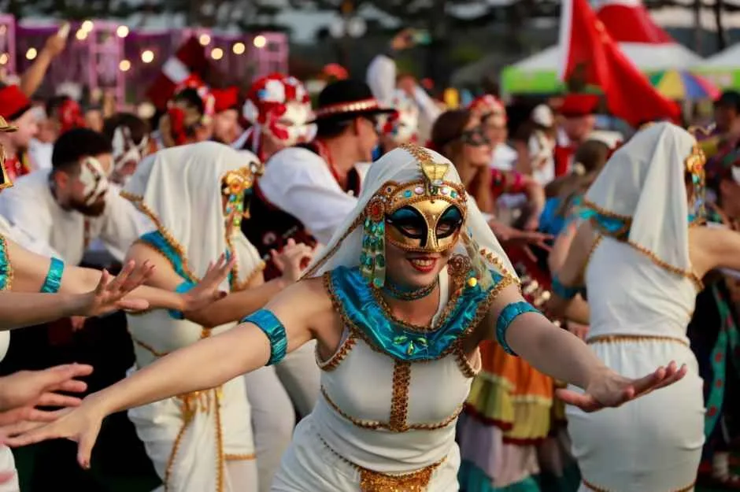
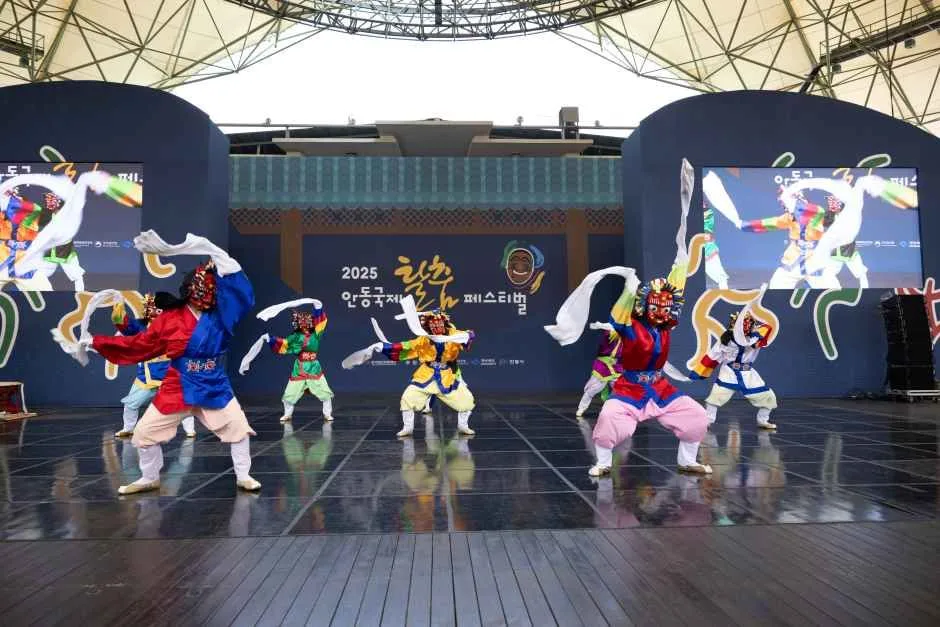
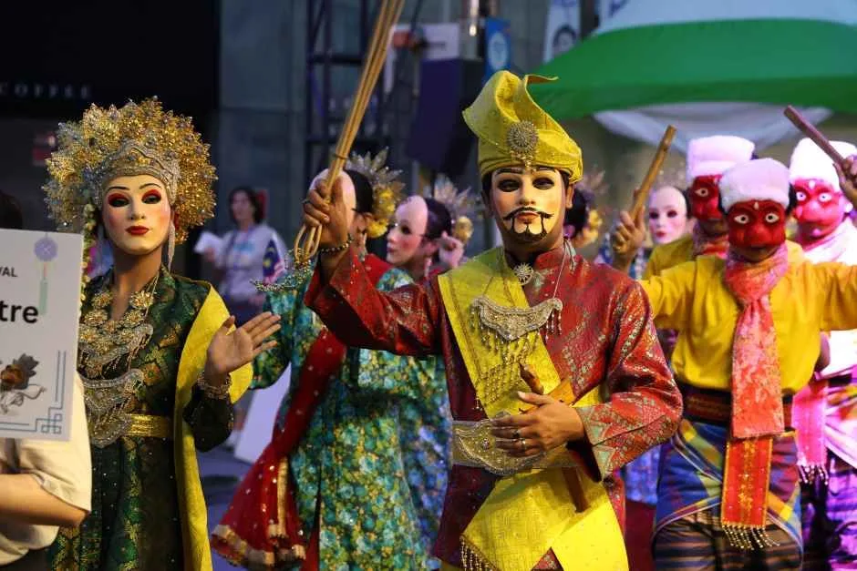

▲ 안동국제탈춤페스티벌 무대에 오른 탈춤 공연단. 2026년 축제는 9월 24일부터 10월 4일까지 11일간 열린다
1. 9월 24일~10월 4일, 11일간의 탈춤 축제
2026 안동국제탈춤페스티벌이 9월 24일부터 10월 4일까지 11일간 안동역·탈춤공원·원도심·하회마을 일원에서 열린다. 올해 주제는 '가면의 기억, 모두의 춤(Memory of Masks, Dance of All)'. 1997년 시작돼 올해로 수십 회째를 맞는 이 축제는 하회마을의 전통 '하회별신굿탈놀이'의 정신을 계승해, 국내외 탈춤 공연을 한자리에 모으는 국내 대표 문화관광축제로 자리 잡았다. 지난해 기준 148만 명이 다녀갔을 만큼 규모가 크다.

▲ 축제 거리 퍼레이드의 한 장면. 대형 마스코트 뒤로 색동 한복을 입은 공연단이 뒤따른다 사진=한국관광공사
2. 24개국 28개 팀, 세계 각국의 탈춤이 모인다
올해 축제에는 24개국 28개 팀의 해외 공연단이 참가한다. 유럽·아시아·중남미 등 세계 각지의 전통 가면극과 무용팀이 안동을 찾아 각국 고유의 가면 문화를 선보이며, 국내에서는 유네스코 인류무형문화유산으로 등재된 한국 탈춤 보유 단체들이 함께 무대에 선다. 화려한 베네치아풍 가면부터 동남아시아 전통 의상, 인도네시아 발리 스타일 행렬까지 국적과 색채가 전혀 다른 공연들이 하루 단위로 교차 편성된다.
| 항목 | 내용 |
|---|---|
| 기간 | 2026년 9월 24일(목) ~ 10월 4일(일), 11일간 |
| 장소 | 중앙선 1942 안동역, 탈춤공원, 원도심, 하회마을 일원 |
| 주제 | 가면의 기억, 모두의 춤 |
| 해외 참가 규모 | 24개국 28개 팀 |
| 핵심 프로그램 | 개막식·퍼레이드, 탈놀이대동난장, 세계탈놀이경연대회, 탈춤 배우기 체험 |
| 입장권(사전판매) | 일반 6,000원 · 학생 4,000원(현장가 대비 2,000원 할인) |

▲ 체크무늬 전통 의상과 타악기로 흥을 돋우는 해외 참가팀. 매년 각국의 개성이 다른 퍼레이드가 이어진다 사진=한국관광공사
3. 입장권은 얼마, 어디서 사나
입장권은 9월 17일까지 사전판매로 구입하면 일반 6,000원, 학생 4,000원으로 현장 구매보다 2,000원 저렴하다. 사전판매 구매자에게는 축제장과 원도심 지정 업소에서 쓸 수 있는 2,000원 상당의 탈춤사랑쿠폰도 함께 제공된다. 온라인은 네이버·카카오톡·쿠팡에서, 오프라인은 안동시청과 읍면동 행정복지센터, 지정 판매처에서 구매할 수 있다. 사전판매 기간이 지나면 현장 매표소에서 구매해야 하므로, 주말 인기 공연을 노린다면 미리 구입해두는 편이 안전하다.
📍 참고로 알아두면 좋은 것
안동국제탈춤페스티벌의 뿌리는 안동 하회마을에서 전해 내려온 '하회별신굿탈놀이'다. 서낭신에게 마을의 안녕을 비는 제의에서 시작된 이 탈놀이는 양반·선비·초랭이 등 등장인물이 신분 질서를 풍자하는 내용으로 유명하며, 국가무형유산으로 지정돼 있다. 축제 기간에는 이 원형 공연을 비롯해 국내외 여러 탈춤을 한자리에서 비교하며 볼 수 있다는 점이 가장 큰 매력으로 꼽힌다.
4. 낮의 퍼레이드, 밤의 무대 — 하루 두 번 다른 축제
안동국제탈춤페스티벌은 낮과 밤의 분위기가 확연히 다르다. 낮 시간대에는 원도심과 탈춤공원 일대에서 거리 퍼레이드와 체험 프로그램이 이어지고, 해가 진 뒤에는 탈춤공원 주무대에서 조명과 불꽃 연출이 더해진 공연이 펼쳐진다. 특히 탈놀이대동난장은 관객이 직접 탈을 쓰고 무대 위 공연진과 함께 어우러지는 참여형 프로그램으로, 야간 시간대에 특히 호응이 크다. 세계탈놀이경연대회는 해외 참가팀들이 각국의 개성 있는 가면극을 겨루는 축제의 하이라이트로 꼽힌다.

▲ 밤이 되면 무대 조명과 불꽃 연출이 더해진 공연이 이어진다. 관객이 함께 참여하는 탈놀이대동난장이 특히 인기다 사진=한국관광공사

▲ 화려한 가면을 쓴 해외 참가팀의 퍼포먼스. 국가별로 색채와 안무 스타일이 크게 달라 비교해 보는 재미가 있다 사진=한국관광공사
5. 관람 팁 — 하회탈 클로즈업부터 체험까지
탈춤 공연은 멀리서 보면 화려한 색감만 남지만, 가까이서 보면 탈 하나하나의 표정과 조각이 살아있다. 무대 앞쪽 자리를 확보하면 양반탈·초랭이탈 같은 전통 하회탈의 익살스러운 표정을 가까이서 감상할 수 있다. 탈춤 배우기 체험 프로그램에 참여하면 관람객도 간단한 춤사위를 직접 배워볼 수 있어 아이를 동반한 가족 단위 방문객에게도 추천할 만하다. 개막식 당일과 주말 저녁 공연은 관객이 몰리는 만큼, 여유 있게 도착해 목 좋은 자리를 미리 잡는 것이 좋다. 축제 기간과 프로그램 세부 일정은 공식 홈페이지에서 확인할 수 있다. 바로가기
▲ 흰 부채를 든 하회탈 양반 캐릭터의 클로즈업. 익살스러운 표정 조각이 하회탈의 상징이다 사진=한국관광공사

▲ 청색 조명 아래 펼쳐지는 군무. 전통 한국 탈춤과 세계 각국 탈춤이 번갈아 무대에 오른다 사진=한국관광공사

▲ 금빛 왕관과 자수 의상을 갖춘 해외 참가팀의 야간 퍼레이드. 국가별 전통 복식을 비교해 보는 것도 관람 포인트다 사진=한국관광공사
✅ 안동국제탈춤페스티벌, 이것만은 확인하세요
· 2026년 9월 24일(목)~10월 4일(일) 11일간, 안동역·탈춤공원·원도심·하회마을 일원
· 24개국 28개 해외 공연단 참가, 주제는 '가면의 기억, 모두의 춤'
· 입장권 사전판매(9/17까지) 일반 6,000원·학생 4,000원, 현장가 대비 2,000원 저렴
· 핵심 프로그램은 개막식·퍼레이드, 탈놀이대동난장, 세계탈놀이경연대회
· 뿌리는 하회마을 '하회별신굿탈놀이', 국가무형유산으로 지정
· 자차라면 안동역 환승주차장(307대) 또는 급속충전기가 있는 버스터미널 공영주차장 기준, 야간 시간대는 혼잡 대비 필요
6. 자차로 간다면 — 탈춤공원·원도심 주차 실전 정보
하회마을 주차 얘기는 이번 기사의 범위가 아니다. 이 축제의 주무대는 안동시 축제장길 200 일원의 탈춤공원(안동문화예술의전당은 축제장길 66)과 중앙선 1942 안동역 뒤편(옛 안동역사 부지), 그리고 원도심이다. 자차로 이 구간을 노린다면 확인해야 할 주차 포인트는 하회마을과는 전혀 다르다.
| 주차장 | 규모·특징 | 충전 인프라 |
|---|---|---|
| 안동역 환승주차장 | 지하 208대+지상 99대, 총 307대(100억 원 투입 조성) | - |
| 안동버스터미널 공영주차장(송현동 713) | 원도심에서 도보 이동 가능 | 전기차 급속충전기 설치 |
| 신시장·구시장 공영주차장 | 원도심 상권과 인접, 탈놀이대동난장 접근성 좋음 | - |
| 안동문화의거리·웅부공원 공영주차장 | 탈춤공원까지 도보·셔틀 이동 필요 | - |
※ 안동역 환승주차장은 한국철도공단·안동시가 공동 조성했으며, 축제 무대 중 하나인 중앙선 1942 안동역 바로 옆이라 KTX로 오는 방문객뿐 아니라 자차 방문객이 축제장까지 가장 짧게 걸어 진입할 수 있는 거점이다.
전기차로 이동한다면 탈춤공원·원도심 권역 자체에는 전용 급속충전기가 확인되지 않는다. 확인된 급속충전기는 안동버스터미널 공영주차장에 설치돼 있으므로, 배터리가 넉넉지 않다면 축제장 진입 전 이곳에서 충전을 마쳐두는 편이 안전하다. 개막일과 주말 저녁, 특히 탈놀이대동난장·세계탈놀이경연대회가 열리는 야간 시간대는 원도심 진입로와 인근 공영주차장이 만차에 가까워질 가능성이 높다. 안동시도 "축제 기간 주차장이 혼잡할 수 있으니 대중교통을 이용해 달라"고 안내하고 있는 만큼, KTX·시외버스로 안동역이나 버스터미널까지 온 뒤 도보나 시내버스로 갈아타는 방식이 현실적인 대안이 될 수 있다. 셔틀버스·시내버스의 정확한 배차간격은 매년 공지가 달라지므로, 방문 전 안동시 버스정보시스템(bus.andong.go.kr)에서 실시간 노선을 확인하는 것이 가장 정확하다.
7. 정리
2026 안동국제탈춤페스티벌은 9월 24일부터 10월 4일까지 11일간, 24개국 28개 팀이 참가하는 국내 최대 규모의 탈춤 축제다. 하회마을 주차나 셔틀버스 얘기를 걷어내고 보면, 핵심은 결국 낮의 퍼레이드와 밤의 무대에서 펼쳐지는 공연 그 자체다. 자차로 간다면 안동역 환승주차장(307대)이나 급속충전기가 있는 버스터미널 공영주차장을 기준점으로 삼고, 야간 프로그램을 볼 계획이라면 만차 가능성을 감안해 여유 있게 도착하자. 사전판매 입장권으로 비용을 아끼고, 세계탈놀이경연대회와 탈놀이대동난장 일정에 맞춰 방문 시간을 잡는다면 축제를 훨씬 알차게 즐길 수 있다.